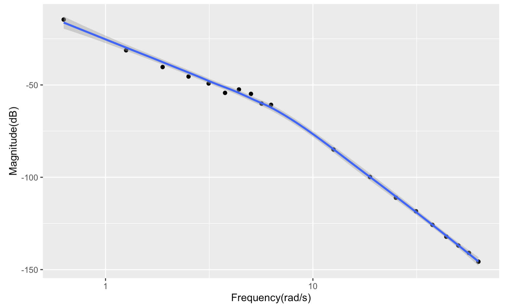
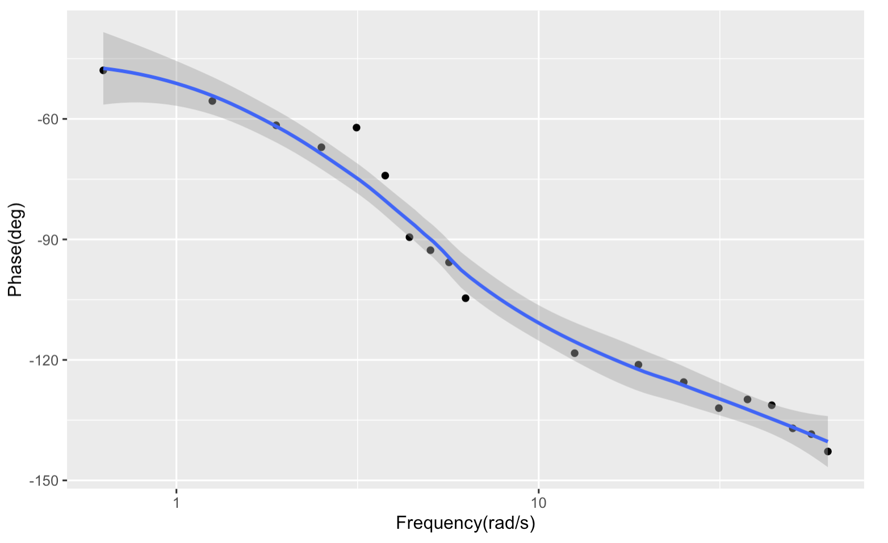

[1] "/Users/jaahyun/Documents/applicationWithR/BodePlot"제어실험 1주차
이론
1. 주파수 응답 특성
선형 시스템에서는 사인파의 입력에 대해 출력도 사인파를 유지한다. 그러나, 시스템의 특성에 따라, 출력과 입력간에 위상, 진폭차이가 날 수 있다. 이러한 주파수 응답 특성은 보드 선도를 통해 확인할 수 있다.
2. 전달함수
전달함수는 입력신호와 출력신호의 관계를 보여준다. 라플라스 변환으로 표현되며, 시스템의 입력신호를 \(U(s)\), 출력신호를 \(\theta(s)\)라고 할 때, 전달함수 \(G(S)\)는 다음과 같다.
\[ G(s) = \frac{\theta(s)}{U(s)}=\frac{1}{ms^2+cs+k}\]
3. 보드선도
보드 선도는 주파수 응답 특성을 그릴 수 있다. magnitude Plot과 phase plot으로 이루어져 있다. Magnitude Plot은 진폭비를 dB로 나타낸다. Phase plot은 위상 차이를 y축으로 한다. 두 plot 모두 frequency를 x축으로 한다.
4. 선형 시스템과 비선형 시스템
선형 시스템은 다음과 같은 특징을 갖고 있다. 1. 여러가지 입력의 출력은 각 입력의 결과값의 합과 같다. 2. 시간이 지나더라도 입력값에 의한 출력값은 같다.
비선형 시스템은 이러한 선형 시스템의 특징과 반대되는 특성을 갖고 있다.
결과 및 토의
1. 보드선도
 
2. 전달함수
\[G(s) = \frac{a}{s^2+2\zeta\omega_ns+\omega_n^2}\] 위 식을 이용하여 전달함수를 구한다. 보드선도를 통해 \(\omega_n \approx 4.4 rad/s\) 임을 알 수 있다. \(s=0\) 일때, Magnitude는 약 -14.6으로 이를 이용하면, a는 약 104이다. \(\omega_n\)일때 Magnitude는 약 -52.5 이므로 이를 이용하여 \(\zeta\)를 구하면 약 0.006369이다. 이는 매우 작으므로 0으로 근사한다. 이로서 도출한 전달함수는 아래와 같다.
\[G(s) = \frac{104}{s^2+4.4^2}\] 이를 운동방정식으로 바꾸면 아래와 같다. \[\frac{1}{104}\ddot{\theta}+\frac{4.4^2}{104}\theta = u\]
결과 분석 및 고찰
실제 시스템이 비선형 시스템인 이유
실제 시스템은 여러가지 외력을 받고 있다. 또한 시간에 따라 예상치 못한 모터의 거동이 나타날 수도 있기 때문에 비선형 시스템이다.
저주파에서 사인파로 예상되는 응답이 정확하게 나타나지 않는 이유
전자회로가 저주파에서 높은 저항을 갖는 경우 응답이 정확하게 나타나지 않을 수 있다.
전달함수를 구했을 때 활용방안을 서술하시오.
전달함수를 통해 운동방정식을 구하고 운동방정식을 활용하여 제어하는 물체의 거동을 설명하는데 활용할 수 있다.